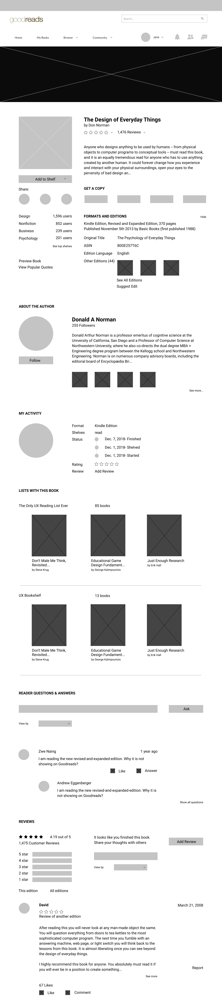

Design Roles
Sole Designer
- UX Design
- Visual Design
Duration
- 1 month
Deliverables
- User Surveys
- Personas
- Competitive Analysis
- User Stories
- User Flows
- Prototype
- A/B and Usability Testing
- Visual Design
Tools & Software
- Figma
- InVision
- Draw.io
- Usability Hub
- Maze
Competitive Analysis
Before delving into the redesign process, I took the time to see whether the current website was serving user needs by conducting several interviews, user surveys, and completing a competitive analysis.
The competitive analysis was important because it helped me better understand what separated Goodreads within the market. As with any analysis, I mainly aimed to answer the following:
- How does the competition position themselves?
- Who is their primary audience? What user groups are they targeting?
- What are their key features or differentiators?
- What types of content is offered on this platform and how is it organized?
Changing Focus
The overall analysis revealed some of the common uses for these sites. Bookstr and Bookish, while they both had a more modern and engaging interface compared to Goodreads and LibraryThing, were based mostly on original content in the form of videos, articles, and news pieces. In looking at my redesign of Goodreads, I thus decided to focus on what sites like Bookstr were lacking and play up Goodreads’ strengths- it’s book data and social interactive components.
Goodreads' Reputation
Undoubtedly, the biggest competitor to Goodreads was LibraryThing. I researched public opinion of both sites, scouring discussion forums and social networking to find that LibraryThing users found Goodreads harder to navigate and weren’t as aware of the social components of Goodreads (felt that it was stronger on LibraryThing). Some positives that came out of browsing LibraryThing’s forums was discovering that many users have accounts in both and recognize the value in both. This reaffirmed for me that there was no need to change what Goodreads was offering users but it raised again the importance of how content is organized on the site and its overall user interface.
“I also find LT more visually appealing. I dislike the cluttered, graphics-heavy look of Goodreads; it's very off-putting.”
“To me [LibraryThing] is like a library, while [Goodreads] is like a bookstore. One based more on reading, the other on selling.”
User Research
To get a broader understanding of what users want and expect in book sites like those featured in my competitive analysis, I completed a survey that was sent through various social media platforms. About one third of survey participants were Goodreads members. My main findings were as follows:
How Active Are You on Goodreads?
What Activities Are You Involved in the Most on Goodreads?
Of the participants that were Goodreads users, most did not visit the site very often (62% only visited the site a couple times a year) and the most common reason was to browse for books, view recommended books, or to look up a book’s rating. What could potentially incentivize users to visit the site more often? Overall, users value the ratings and reviews on Goodreads, commenting:
“They seem to be more accurate compared to other sites.”
“Yes, since Goodreads isn't a bookseller and all kinds of people from all over use it, I think the ratings are less controlled.”
“I think Goodreads ratings are only helpful when it is paired with a massive review set. Otherwise, they can be very telling of a specific audience base, only.”
“Although opinions differ, if there are enough good ratings they can't be wrong!”
Concerning reviews:
“The reviews are helpful because they tend to be more insightful.”
“I absolutely think they are helpful! Maybe not in itself, but it is telling of the kind of audience the book attracts.”
“The vast amount of reviews is really relevant as then I can gauge how legitimate the reviews really are. Goodreads usually has a fairly good number of reviews.”
Not many survey participants indicated that they take part in book discussions online, but many, even non-members, indicated that they would use Goodreads to discover new books. This corroborated my findings from the SWOT analysis concerning the main difference between Goodreads and LibraryThing. It seems that discussions and social interactions on the site are not participated in enough and this could partially be a result of the cluttered interface.
It should also be noted that both groups (Goodreads members and non-members) heavily valued both ratings and reviews. I discovered the same through more in-depth interviews.
View Full ResultsWireframes
I delve into sketches and wireframes to provide clarity into how information will be organized on the screen. The absence of finishing details allows me to focus on content organization and begin the testing process for faster reiteration.
For Goodreads, I developed basic sketches of the main screens and corresponding wireframes:
Home Page
Overall, the original home page has limited balance with the right side of advertisements overpowering the design and limited negative space. Negative space in content-heavy sites is more important than the positive.

The wireframe goes with a two-column layout to provide more spacing between elements. More negative space gives greater clarity to content and decreases users' cognitive processing of information.

Book Profile
This page features a lot of different book details and information. Sections are not evenly aligned, requiring more effort of the user. There is little rhythm of elements, limiting comprehension and ease of use.

In considering the redesign of this page, I developed two options. One features a navigation bar that would allow users to quickly navigate to pertinent information to make content less overwhelming. The second allows users to scroll through information, similar to the original platform and popular book sites like Amazon and Barnes & Noble.

Group Profile
This page is less visually overwhelming on Goodreads but as mentioned from the user research, groups is a feature that could be greater utilized by visitors to the site. To encourage user participation, the page needs greater visual order and content organization.

To encourage user participation, I considered providing a clearer navigation that would inform users of the varied content provided by Book Groups.

Testing
I conducted preference tests to capture users’ opinions about targeted elements. Using preference tests helps to resolve preferential conflicts by the designer and allow users to dictate the direction of the final design.
Option A- 40%
Option B- 60%
“This one is too busy/crowded with info. It’s too much to take in.”
“I like that you can immediately jump to what you want instead of scrolling.”
“I would prefer to click on accessible links rather than have all info available on a single page.”
Option A- 40%
Option B- 60%
“Although this layout has more content, the content is organized in a way that is easy to visually navigate.”
“I like how the space is utilized.”
Option A- 60%
Option B- 40%
“I like to see my options vertically and right when I ‘enter’ the site- the top left corner.”
“Feels modern!”
Book Profile
Option A- 40%
“This one is too busy/crowded with info. It’s too much to take in.”
Option B- 60%
“I like that you can immediately jump to what you want instead of scrolling.”
“I would prefer to click on accessible links rather than have all info available on a single page.”
Browse Groups
Option A- 40%
Option B- 60%
“Although this layout has more content, the content is organized in a way that is easy to visually navigate.”
“I like how the space is utilized.”
Group Profile
Option A- 40%
Option B- 60%
“I like to see my options vertically and right when I ‘enter’ the site- the top left corner.”
“Feels modern!”
Based on preference test results, I developed high-fidelity mockups from the chosen wireframes in preparation for usability testing. Via Maze, participants were asked to complete basic tasks and provide feedback.
Test results were largely successful (>60% success rates) and indicated the need for only minor changes. Feedback included:
“Some of the grey tool bars were very similar to the bottom of the page so when I scrolled to it I thought it was the bottom of the page. So that was confusing.”
“Overall, it was easy to use and figure out. Although, I struggled a lot with finding the book clubs/groups. I wanted to search for them under the ‘Community’ tab.”
In response to the feedback from the usability testing, I decided to make the footer an off-black to ground the interface and distinguish the secondary navigation bar. Thankfully, “groups” already exists on the current Goodreads platform under the 'Community' tab but the option was not made available to users during the testing phase.
Final Design
Home Page
User Bookshelf

Group Bookshelf


Book Discussions

Filter Reviews

Leave Review

Final Thoughts
In approaching the redesign process for Goodreads, I decided to focus on the most basic user actions- ones that were most prevalent amongst my survey participants and interviewees. This allowed me to really focus on how I approach content organization and my UI skills. Even in looking at just the basic actions a user could take on the site, I found it challenging to balance all the information present on the site and find innovative ways to incorporate them in a more simplistic design. However, in completing the project, I became encouraged to approach more complex issues on the Goodreads site, such as categorizing review formats (gifs, pictures, text) in a way that could be more useful for browsers. Overall, I enjoyed the opportunity to approach a skill I needed to develop further and anticipate delving further into a redesign of Goodreads on all fronts.